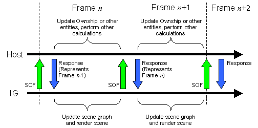
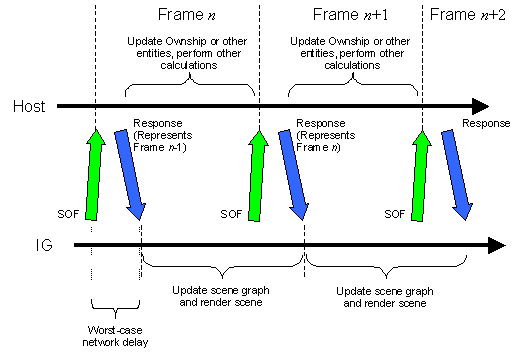

CIGI Host Emulator 3
|
CIGI Host Emulator 3 |
During synchronous operation, the IG sends a start-of-frame (SOF) message to the Host to signal the beginning of each frame. This message, which is usually driven by a vertical sync signal from the display system, functions as a "heartbeat" that dictates the timing of data transfers between the IG and Host. The SOF message also contains mission function responses, event notifications, and other IG data.
The Host immediately responds to each SOF message with its own message containing entity positions and orientation, component states, and other data describing changes to the scene during the previous frame. The Host then begins its next computational cycle, while the IG updates and renders the scene.
This mechanism makes the host data available at the beginning of every IG frame, eliminating the additional latencies symptomatic of asynchronous operation. Also, because the Host’s frame rate is regulated by the IG, this prevents jitter caused by the creeping effect of misaligned frames.
The following figure illustrates the sequence described above:

Synchronous Start-of-Frame/Response Cycle
Depending upon bandwidth limitations and the amount of Ethernet traffic present on the system, the IG may not receive a response in time to finish rendering the scene before the start of the next frame. To alleviate this situation, a time offset can be introduced so that the IG sends each SOF message slightly before the beginning of the next IG frame. This technique allows data to arrive from the Host at such a time as to allow the IG its entire frame time for computations and rendering. Because the available Ethernet bandwidth may vary from frame to frame, this offset can be adjusted to allow for worst-case network loads. The figure below illustrates the start-of-frame offset technique:

Synchronous Message Timing Offset
To enable tracking of Ethernet messages and to ensure one-to-one correspondence, both the SOF and Host response messages are tagged with sequence numbers. The sequence number originates within the IG and is passed to the Host in the Frame Counter parameter of the Start of Frame data packet. Before sending its response message, the Host should extract the number from the Start of Frame packet and place it into the Frame Counter parameter of the IG Control data packet.
|
© 2008 The Boeing Company |
rev 3.3.0 |